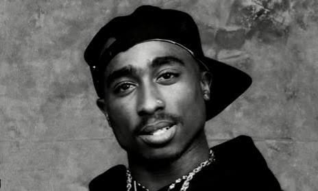

Mi az a Hip-Hop
A hip-hop egy komplex kulturális és művészeti irányzat, amely az 1970-es évek elején indult New York Bronx negyedéből. Bár a hétköznapokban gyakran csak a zenei műfajra értik, valójában egy olyan átfogó szubkultúráról van szó, amely saját tánccal, képzőművészettel, öltözködéssel és életstílussal rendelkezik.
Négy fő alappillére van: a ritmikus szövegelés (MC-ing vagy rap), a lemezjátszós zenei alapok keverése (DJ-ing), az akrobatikus utcai tánc (breaktánc) és a vizuális önkifejezés (graffiti).
A műfaj legnagyobb legendái
- Tupac Shakur (2Pac): A nyugati part ikonikus alakja, aki mély érzelmekkel, társadalmi problémákkal és az utcai élettel foglalkozó szövegeivel vált a hip-hop egyik legnagyobb hatású alakjává.
- The Notorious B.I.G. (Biggie Smalls): A keleti part és New York királya, akit egyedülálló történetmesélő képessége és laza, mégis precíz ritmusérzéke tett halhatatlanná.
- Eminem (Marshall Mathers): Minden idők legtöbb lemezt eladott rappere, aki elképesztő rímtechnikájával, sebességével és nyers őszinteségével törte át a faji és kulturális korlátokat.
